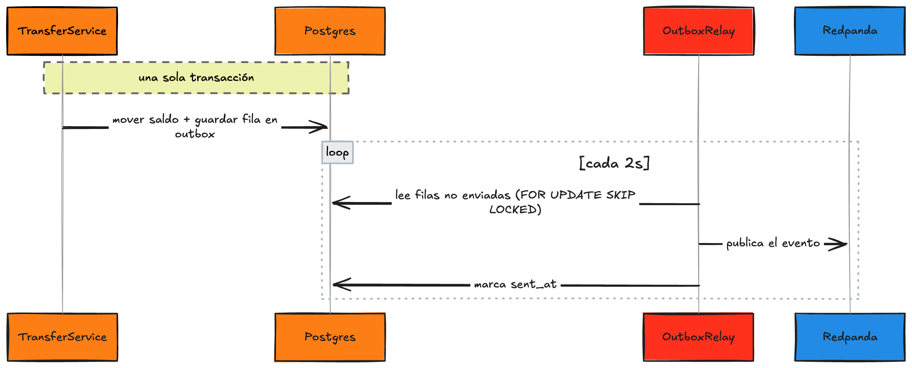

Fase 8 · De demo a producción¶
Rama: no hay commit obligatorio, es referencia. Pero acá sí hay código, porque estos tres temas se entienden mejor viéndolos que oyéndolos.
Lo que armamos funciona y enseña bien los conceptos, pero tiene atajos que conviene nombrar en voz alta. No los escondí; los dejé para acá: outbox, idempotencia y cola de mensajes muertos. Son los tres que separan un demo de algo que aguanta plata en producción.
1. El patrón outbox: que el evento y el dato nunca se separen¶
Mira el orden que quedó en transfer: primero movemos la plata en la base (transacción), después publicamos el evento al broker. Son dos sistemas distintos, la base y Redpanda, y no comparten transacción. ¿Qué pasa si la plata se guarda pero el proceso se muere antes de publicar? La transferencia ocurrió y nadie se enteró. Al revés es peor: si publicaras antes de guardar y el guardado falla, avisaste de algo que no pasó.
Esto se llama el problema del doble guardado (dual write): escribir en dos lados sin una transacción que los cubra a ambos.
Nivel senior: ¿y por qué no meto los dos en una sola transacción?
Es la primera pregunta que salta: "pongo el moveMoney y el kafkaTemplate.send dentro del mismo @Transactional y ya". No sirve. Una transacción de base de datos solo cubre la base; el broker es otro sistema, con su propia noción de "confirmado", y no comparten commit. Sí existe un mecanismo para coordinar dos sistemas —transacciones distribuidas, XA / two-phase commit—, pero es pesado, frágil bajo fallos y Kafka no lo soporta bien. La salida pragmática no es coordinar dos sistemas, sino convertir el problema de dos sistemas en uno de un solo sistema (la base). Eso es, exactamente, lo que hace el outbox.
Concepto al paso: el patrón outbox
La idea es no publicar directo al broker. En vez de eso, escribes el evento en una tabla outbox dentro de la misma transacción que mueve la plata. O se guardan las dos cosas, o ninguna: la base sí sabe hacer eso. Después, un proceso aparte lee esa tabla y publica al broker con reintentos, marcando cada fila como enviada. El evento y el cambio de datos quedan pegados.
La tabla:
CREATE TABLE outbox (
id UUID NOT NULL,
topic VARCHAR(255) NOT NULL,
msg_key VARCHAR(255) NOT NULL,
payload TEXT NOT NULL,
created_at TIMESTAMPTZ NOT NULL DEFAULT now(),
sent_at TIMESTAMPTZ,
CONSTRAINT pk_outbox PRIMARY KEY (id)
);
En vez de publicar, transfer guarda la fila en la misma transacción del movimiento. Fíjate que ahora el método sí es @Transactional, y adentro pasan las dos cosas juntas:
@Service
class TransferService(
private val accountService: AccountService,
private val outbox: OutboxRepository,
private val mapper: ObjectMapper
) {
@Transactional
fun transfer(request: TransferRequest) {
require(request.fromId != request.toId) { "No puedes transferir a la misma cuenta" }
when (val result = accountService.moveMoney(request.fromId, request.toId, request.amount)) {
is MoveResult.Success -> {
val evento = MovimientoRegistrado(request.fromId, request.toId, request.amount)
outbox.save(
OutboxEvent(
topic = "wallet.movements",
msgKey = evento.fromId.toString(),
payload = mapper.writeValueAsString(evento)
)
)
}
is MoveResult.InsufficientFunds -> throw InsufficientFundsException()
is MoveResult.AccountNotFound -> throw AccountNotFoundException(result.id)
}
}
}
Y un relay que corre aparte, lee lo no enviado y publica:
@Component
class OutboxRelay(
private val outbox: OutboxRepository,
private val kafkaTemplate: KafkaTemplate<String, String>
) {
@Scheduled(fixedDelay = 2000)
@Transactional
fun publicarPendientes() {
outbox.findBySentAtIsNullOrderByCreatedAt().forEach { fila ->
kafkaTemplate.send(fila.topic, fila.msgKey, fila.payload)
fila.sentAt = Instant.now()
}
}
}
Todo el ciclo, de la transacción al broker, se ve así:

Por qué no lo metimos en el taller en vivo
El outbox agrega una tabla, un relay con @Scheduled y serialización a mano. Para 60 minutos, habría tapado el concepto central (publicar y consumir) con plomería. Pero en algo con plata, el outbox no es opcional: es la diferencia entre "casi siempre avisa" y "siempre avisa".
Nivel senior: qué garantiza el relay (y qué no)
El outbox te da entrega at-least-once (al menos una vez), no exactly-once. Mira el caso: el relay publica la fila al broker, pero se muere justo antes de marcar sent_at. Al reiniciar, la vuelve a ver como pendiente y la publica otra vez. El evento salió dos veces. Eso no es un defecto del outbox: es el precio de no tener transacción distribuida. Por eso el outbox y la idempotencia (lo que sigue) son socios: el productor promete "esto sale al menos una vez", y el consumidor promete "procesarlo dos veces no cambia el resultado". Juntos te dan el efecto de exactly-once sin la magia que no existe.
Nivel senior: el orden y varias instancias del relay
Dos detalles que muerden en producción. El orden: publicamos por created_at y usamos msg_key (la cuenta de origen), así los eventos de una misma cuenta salen en orden y caen en la misma partición. Y las instancias: si corres la app replicada, dos relays podrían tomar la misma fila y publicarla doble. Se resuelve con SELECT ... FOR UPDATE SKIP LOCKED: cada relay agarra un lote de filas y las bloquea, y los demás se saltan las que ya están bloqueadas en vez de esperarlas. Con Spring Data lo expresas con @Lock(LockModeType.PESSIMISTIC_WRITE) y @QueryHints para el skip locked.
Nivel senior: polling vs CDC (Debezium)
Nuestro relay hace polling: pregunta cada 2 segundos "¿hay filas nuevas?". Simple y suficiente para la mayoría, a costa de algo de latencia y de consultar la tabla en vano cuando no hay nada. La alternativa industrial es CDC (Change Data Capture) con Debezium: en vez de sondear, lee el log de transacciones de Postgres (el WAL) y publica los cambios de la tabla outbox al broker apenas ocurren, sin polling y con menos latencia. Es más infraestructura; para un servicio mediano, el relay con @Scheduled cumple de sobra. Saber que Debezium existe es lo que te deja decidir con criterio, no por moda.
2. Idempotencia: procesar el mismo evento dos veces sin romperlo¶
Un broker puede reentregar un evento. No es un bug, es cómo funciona: ante un reinicio o un rebalanceo de particiones, prefiere entregar de más que perder algo. Eso quiere decir que tu consumidor tiene que aguantar recibir el mismo evento dos veces sin duplicar el efecto. Hoy, el listener de movement guardaría el movimiento repetido.
Concepto al paso: idempotencia
Una operación es idempotente si ejecutarla una vez o cinco veces deja el mismo resultado. Apagar una luz que ya está apagada no cambia nada: eso es idempotente. Queremos que "guardar este movimiento" se comporte igual.
La forma directa: darle un id único a cada evento y llevar registro de cuáles ya procesaste.
data class MovimientoRegistrado(
val eventId: UUID = UUID.randomUUID(),
val fromId: UUID,
val toId: UUID,
val amount: BigDecimal,
val occurredAt: Instant = Instant.now()
)
CREATE TABLE processed_events (
event_id UUID NOT NULL,
processed_at TIMESTAMPTZ NOT NULL DEFAULT now(),
CONSTRAINT pk_processed_events PRIMARY KEY (event_id)
);
El listener chequea, procesa y marca, todo en una transacción:
@KafkaListener(topics = ["wallet.movements"], groupId = "movement")
@Transactional
fun onMovimiento(evento: MovimientoRegistrado) {
if (processedRepo.existsById(evento.eventId)) {
return // ya lo procesé, lo ignoro
}
movementService.record(evento.fromId, evento.toId, evento.amount)
processedRepo.save(ProcessedEvent(evento.eventId))
}
Por qué en la misma transacción
Guardar el movimiento y marcar el evento como procesado tienen que confirmarse juntos. Si guardaras el movimiento pero el proceso muere antes de marcar el evento, en la reentrega lo guardarías de nuevo. La transacción los pega: o pasan los dos, o ninguno.
3. Cola de mensajes muertos (DLQ)¶
¿Qué pasa cuando un evento revienta el consumidor una y otra vez? Un JSON corrupto, un dato imposible. Si lo reintentas para siempre, ese evento tranca la partición y bloquea a los que vienen detrás.
Concepto al paso: dead letter queue
Una DLQ (cola de mensajes muertos) es un topic aparte a donde mandas los eventos que fallaron demasiadas veces. En vez de reintentar infinito o botar el evento, lo apartas para revisarlo después, y el consumidor sigue con el resto. En Kafka la convención es un topic con sufijo .DLT (dead letter topic).
Spring for Kafka lo hace con un bean. Reintenta unas cuantas veces y, si sigue fallando, publica el evento al .DLT:
@Configuration
class KafkaErrorConfig {
@Bean
fun errorHandler(kafkaTemplate: KafkaTemplate<Any, Any>): DefaultErrorHandler {
// Publica a "wallet.movements.DLT" tras agotar los reintentos.
val recoverer = DeadLetterPublishingRecoverer(kafkaTemplate)
// 3 reintentos, esperando 1 segundo entre cada uno.
val backOff = FixedBackOff(1000L, 3L)
return DefaultErrorHandler(recoverer, backOff)
}
}
Spring al paso: cómo entra este bean solo
Spring Boot detecta que declaraste un DefaultErrorHandler y se lo conecta a los @KafkaListener sin que hagas nada más. A partir de ahí, cualquier excepción en un listener pasa por esta política: reintenta con el backoff, y al agotarse manda el evento al .DLT. Después conectas otro consumidor a ese .DLT para alertar o inspeccionar.
Lo que quedó por fuera, en una línea cada uno¶
- Concurrencia sobre la misma cuenta. Dos transferencias en paralelo sobre la misma cuenta pueden pisarse. Se resuelve con bloqueo optimista: una columna
@VersionenAccounthace que la segunda transacción en confirmar falle y se reintente con el saldo fresco. - Separar los servicios de verdad. Productor y consumidores viven hoy en la misma app por comodidad. Como
transfersolo publica un evento y no conoce a nadie, sacarnotificationa su propio despliegue es mover el listener a otro proyecto suscrito al mismo topic. El evento enmovement/domaines el contrato compartido. - Observabilidad. Cuando un evento cruza servicios, querrás un
trace-idque viaje con él, para seguir una transferencia desde elPOSThasta la notificación aunque hayan pasado por tres procesos.
Lo que te llevas¶
Construiste una wallet que mueve plata de forma transaccional, la expusiste por REST, y desacoplaste el registro y la notificación con eventos sobre Redpanda, con consumidores independientes que reaccionan sin conocerse. Y ahora sabes qué le falta para producción, con código, no con handwaving: outbox para no perder eventos, idempotencia para no duplicarlos, y DLQ para no atascarte con uno malo.
¿Quieres exprimir más el lado Kotlin? En la Fase 9 —avanzada y opcional— tomamos el consumidor bloqueante de la Fase 7 y lo llevamos a coroutines, para cuando un consumidor tiene que llamar a varios servicios externos sin bloquear un hilo por cada espera.
Revisa las Referencias para seguir por tu cuenta.